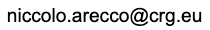

Niccolò Arecco
Hi, I'm Nicco and welcome to my personal website! I am a postodoctoral researcher in the field of functional genomics.
I work at Centre for Genomic Regulation (CRG) in the lab of Juan Valcárcel in the sunny Barcelona, Spain. Currently I am part of the multidisciplinary UNLEASH project, an ERC Synergy grant that aims to understand whether alternative splicing can be specifically modulated by small molecules.
Before that I was a postdoc in the lab of Manuel Irimia, also at the CRG and I did my PhD in epigenetics & neuroscience under the supervision of Kyung-Min Noh at EMBL in Heidelberg, Germany.
For more details about my professional background, please check my CV.
Research
Brief Research Statement
My previous and ongoing work focuses on gene transcription using functional genomics approaches. I am particularly interested in how novel alternative splicing programmes diversify the functions of chromatin regulators consequently affecting gene expression.
Selected Publications
- Bhuiyan T., Arecco N.2, Mendoza Sanchez P. K.2, et al. (2025)
TAF2 condensation in nuclear speckles links basal transcription factor TFIID to RNA splicing factors
Cell Reports - Rogalska M., Mancini E.2, Bonnal S.2, Gohr A., Dunyak B. M., Arecco N., et al. (2024)
Transcriptome-wide splicing network reveals specialized regulatory functions of the core spliceosome
Science - Arecco N.1, Mocavini I.1, et al. (2024)
Alternative splicing decouples local from global PRC2 activity
Molecular Cell - Deliu E.1, Arecco N.1, Morandell J.1, Dotter C.1, et al. (2018)
Haploinsufficiency of the intellectual disability gene SETD5 disturbs developmental gene expression and cognition
Nature Neuroscience
Full list of publications
You can check out all my pre-prints and publications on my Google Scholar or all my peer-reviewed work with this PubMed search.
Contact
Email: click to reveal

You can find me at:
 GitHub
GitHub ORCiD
ORCiD Web of Science ResearcherID
Web of Science ResearcherID LinkedIn
LinkedIn